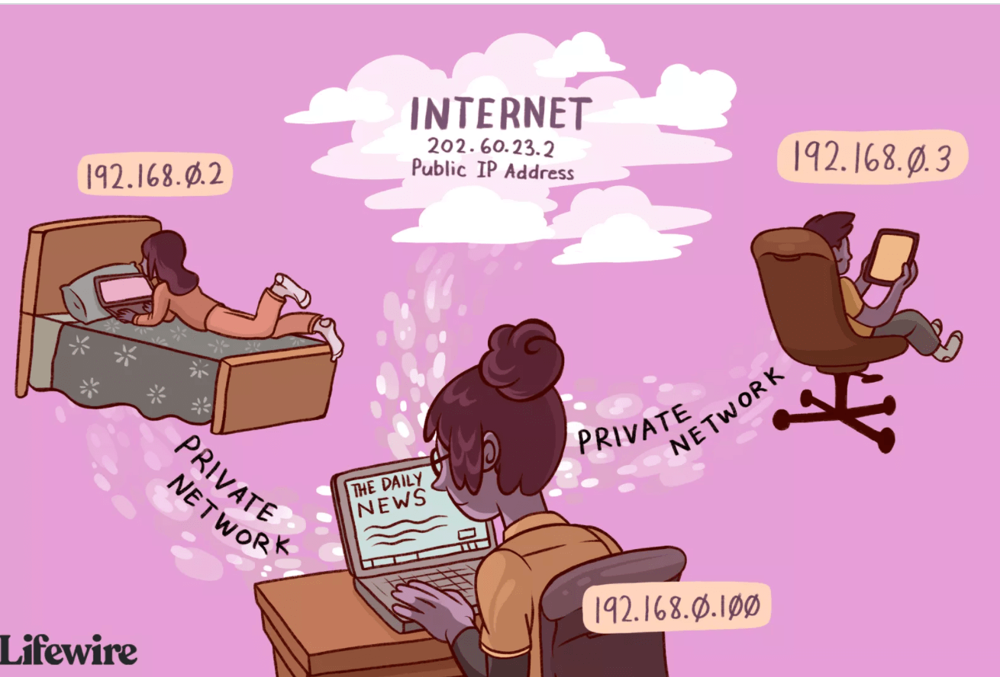
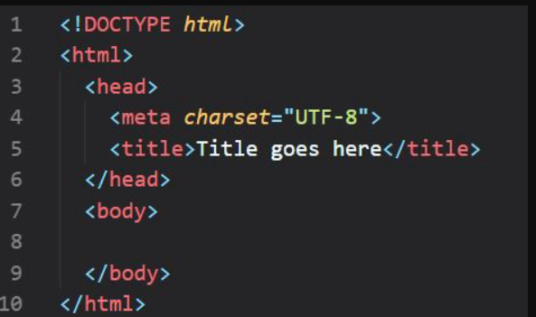

The Internet (or internet) is the global system of interconnected computer networks that uses the Internet protocol suite (TCP/IP) to communicate between networks and devices. It is a network of networks that consists of private, public, academic, business, and government networks of local to global scope, linked by a broad array of electronic, wireless, and optical networking technologies. The Internet carries a vast range of information resources and services, such as the inter-linked hypertext documents and applications of the World Wide Web (WWW), electronic mail, telephony, and file sharing.

A document which can be displayed in a web browser such as Google Chrome, Microsoft Internet Explorer or Edge. These are also often called just "pages.
A computer which stores a website or other data that can be accessed over the Internet or which provides other services to network.
A computer program with a graphical user interface for displaying HTML files used to navigate the World Wide Web.
A program that search for andd identifies items in a database that correspond to keywords character specified by the user, used especially for finding particular site on the World wide Web. eg. google.
we've all sat down and sent out an email massage before but have you ever thought about how the massage gets from one to another.This is the job for internet protocol. Our language is very different from the language that a computer use so the massage that we create need to be translated from an alphabetic text into an electronic signal before they can be send this translation is handle in the computer by the separate modules in the communication protocol because these protocol or rule of conduct usually communicate with two or more modules they are best described as layers in a stack of protocol these layer are the application layer, transport layer, internet layer, link layer, physical layer.

The massager that we sent our filter through these layer and broken down into a small chunks of data call packets we start with the application layer (eg. E-mail, massager) that you maybe familiar with to create our massage one example of a protocol form which is Hypertext Transfer Protocol or HTTP.The transport layer uses the Transmissions Control Protocol or TCP to encapsulate the data block from the application layer it then move to the internet layer where the Internet Protocol or IP is used to deliver the packets these packets are delivered through the Link layer which is an Ethernet cable to the Physical layer which id the basic hardware of your computer network.
Computer in internet communicate with each other underground or underwater or wireless.If I want to download a file from internet then my computer should have an address so that other computer in internet can find and locate my computer in internet terms that address is called IP address. When you want to watch a YouTube you need IP address, want to send an email you need IP Addresses, want to browser gifts off adorable cats you need IP Address. IP Addresses is a unique string of number separated by full stops that identifies each computer using the internet Protocol to communicate over a network.
In the internet computer always identify each other with unique numbers called IP Addresses.The IP addresses doesn't understand human languages If they do not understand human languages how load a website when we types its addresses in the web browser's URL bar that's the place where DNS (Domain Name Server) come in and suppose.For example you speak english amd you want to communicate a person who speaks French for effective communication you will need a translator.Same is the case on the internet too.Computer and web browser understand Ip addresses and we humans understand our languages .So DSN come in and translate between humans and computers languages.When we type google.com in the web browser DNS translates it to the web browsers that is IP Addresses and give into the web browser.So web browser understands that we want to access google.com so it contacts the Google server and loads google.com on the computer .That's how DNS work.
Server are computer storing HTML files, images, sounds, videos for any other files types.Server that work together to provide IP addresses of the requested website to the web browser are called DNS servers.There are four types of Server:
DNS resolver is provided by the internet service provider (ISP) it connects the web browser of our computer to the DnS name servers .
Root name server has 13 sets (letter.root-server.net) where letter ranges from A to M and are operated by 12 different organizations each set has a number of server placed around the world and information page exists for all root name servers at address letter.root-server.org where letter ranges from A to M except g. This is the home page address details of all root name server can be found in the websitewww.root-server.org
TLD name server stores the information of all domains sharing a common domain extension ( .com, .net, .in, .edu).For Example .com :
.net
Authoritative name server is the last server in the domain name system it stores the IP address of the requested web site.Authoritative name server you can find with CMD commands
A data packet is a unit of data made into a single package that travels along a given network path. Data packets are used in Internet Protocol (IP) transmissions for data that navigates the Web, and in other kinds of networks.For example, every Web page that you receive comes as a series of packets, and every e-mail you send leaves as a series of packets. Networks that ship data around in small packets are called packet switched networks.
Hypertext Transfer Protocol is the protocol for transferring hypertext.What is HyperText? A Hypertext is a series of text documents which are linked each other via hyperlinks.HTTP is the protocol to transfer hypertext from the web browser so you can load it up view it inside your browser and click the links and navigate to other pages.
HTML is stand for Hypertext Markup language and the basic of all thing web.Hypertext is the process of linking object to each other so that one object clicked the linking object can be viewed and hypertext markup language was created by Tim Berners-Lee in 1990 so internet could be used through the internet.It uses to describe the structure of web page and a special syntax or notation to organize and give information about of the page to the browser.Elements usually have opening and closing tags that surround and give meaning to content.For example there are different tag options to place around text to show whether it is a heading, a paragraph,or a list.
Router is a networking device that forwards data packets between computer networks.Routers perform the traffic directing functions on the internet. Data send through the internet, such as a web page or email, is in the form of data packets.